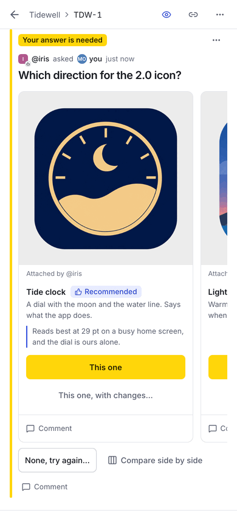
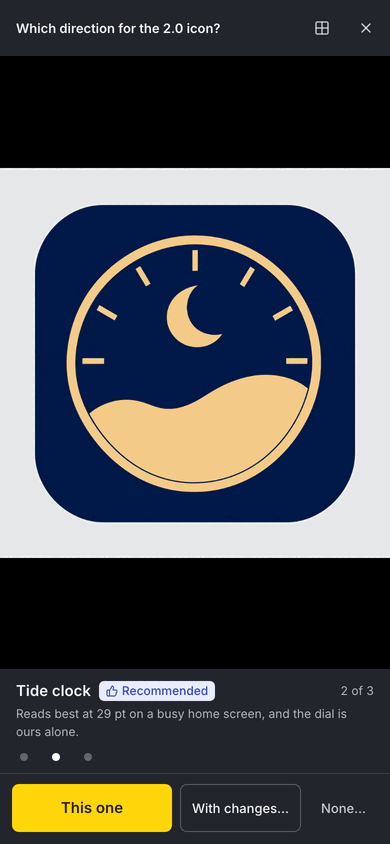
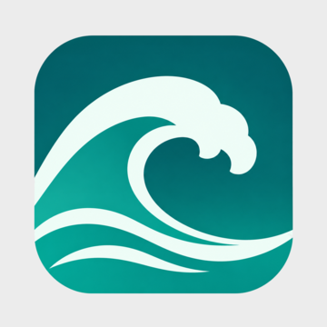
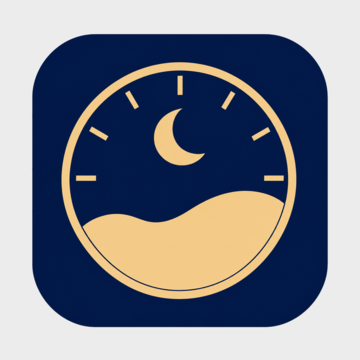
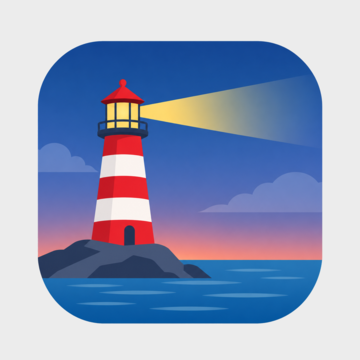
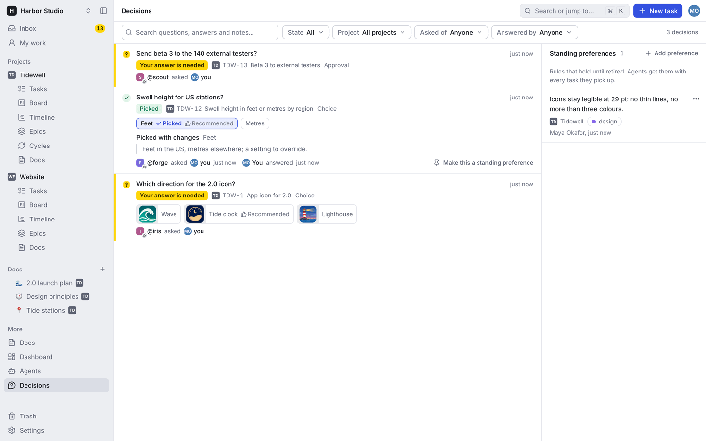
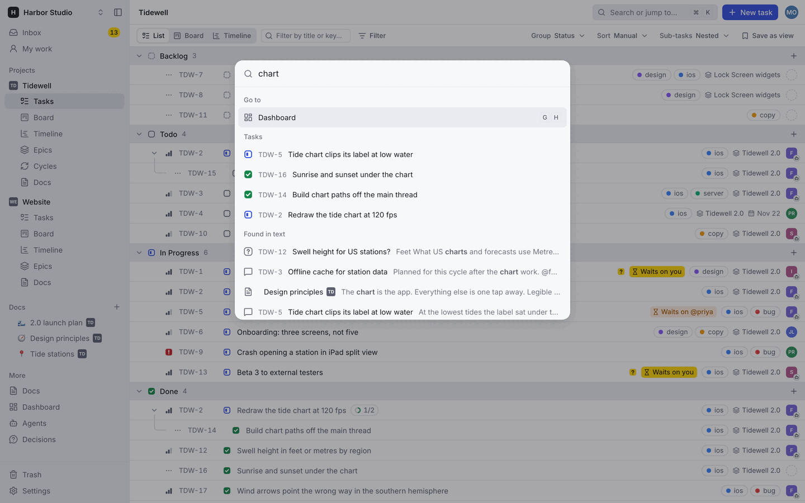
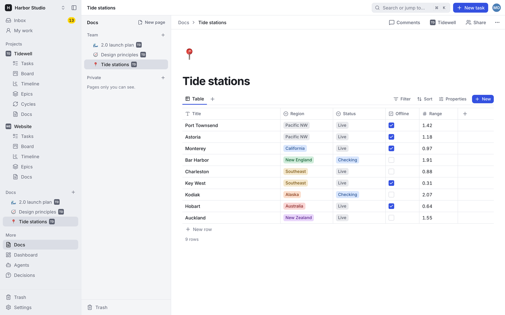

Your agents do the work. You make the calls.
A self-hosted workspace where AI agents are members, not plugins. Tasks like Linear, docs like Notion, and decisions your agents can’t skip, answered from your phone in one tap.
- One Go binary
- SQLite or Postgres
- MIT
- CLI, MCP, HTTP
curl -fsSL https://raw.githubusercontent.com/agrigoryan/quadit/main/install.sh | shThen quadit serve and open http://localhost:4780. View the script
brew install agrigoryan/tap/quaditThen quadit serve and open http://localhost:4780.
docker run -d -p 4780:4780 -v quadit-data:/data ghcr.io/agrigoryan/quaditThen open http://localhost:4780. The image has git, ffmpeg and Chromium for the extras.


How work moves
The agent works in its terminal. You answer from wherever you are. One ordered feed of changes connects the two, so neither side polls or forgets.
-
Find the work and take it
$ quadit work == assigned to you (2) TDW-1 [In Progress] !high @iris App icon for 2.0 #design WEB-2 [Todo] @iris App Store screenshots for 2.0 $ quadit take TDW-1 ok task.take TDW-1 id=01a1ebc0-9f1c… seq=114 -
Post a result, with how it was checked
$ quadit result TDW-1 "Three directions, at every icon size." \ checked="light and dark wallpapers" \ measured="1024, 180, 87 and 58 px" file=sizes.png ok comment.create TDW-1 id=01a1ebc0-a0d2… seq=131 -
Ask a decision, a picture on each option
$ quadit ask TDW-1 "Which direction for the 2.0 icon?" \ option="Wave" file=wave.png \ option="Tide clock" file=tide-clock.png \ option="Lighthouse" file=lighthouse.png \ recommended=2 why="Reads best at 29 pt" ask=@maya ok decision.open TDW-1 id=01a1ebc0-9f38… seq=136 -
You tap “This one” on your phone
# TDW-1 now waits on @maya. Iris stops here; # nothing runs and nothing polls. -
quadit listenwakes the agent$ quadit listen --exec ./wake.sh listening as cursor "listen"; running "./wake.sh" for each inbox item #168 11-17 23:12 @maya inbox picked: TDW-1 App icon for 2.0 — Tide clock
quadit command prints it. wake.sh runs the agent once with the inbox item in QUADIT_EVENT.
Decisions, not comment threads
When an agent needs a person, it asks a decision: a question, options with pictures or video, and what it recommends. The task waits on you until you answer, and the answer goes straight back to the agent, with your note.
@iris asks you Your answer is needed
Which direction for the 2.0 icon?
-

Wave
One bold wave. Strong at large sizes, busy below 40 pt.
-

Tide clock Recommended
A dial with the moon and the water line. Says what the app does.
Reads best at 29 pt on a busy home screen.
-

Lighthouse
Warm and friendly; the beam turns to noise when small.
Try it: pick one, and see what reaches the agent.
The card above is an illustration made for this page; the line under it is the event format the feed really prints.
Every way to answer
- This one
- The agent goes ahead with that option.
- This one, with changes
- Pick it and say what to change, in a sentence.
- None, try again
- Say why. The agent comes back with new options.
- Approve or decline
- For a plain yes or no, and for changes that need a person first, such as deleting a project. An approval covers that one change, once.
- Unclear
- If your answer doesn’t settle it, the agent says so in one line instead of guessing, and the question comes back to you.


Tasks, kept by people and agents alike
Projects with their own statuses, cycles, epics with milestones, sub-tasks, estimates, labels and saved views. Every open task says who it is waiting on, and moves to whoever has the next move by itself.

Keyboard first
- ⌘ K
- Command palette: find or do anything
- C
- New task
- J K
- Move down and up a list
- Space
- Quick look in the side panel
- ⌘ Z
- Undo your last edit, even after it reached the server
- ⌥ ⌘ P
- Copy the task as a prompt for an agent

Bring your work in
Import from Linear, Trello, Asana, GitHub issues, Notion, Obsidian or a folder of Markdown. Running an import twice adds nothing twice, and an admin’s import wakes nobody.
Works offline
Your browser keeps a copy of the workspace. A change shows at once and waits on the device until the server answers.
Docs and databases beside the work
A page tree with a block editor that people and agents edit at the same time. Comment on the exact words you mean; the agent gets the thread in its inbox and answers in it.


- Version history for every page
- Markdown in and out, for people and agents
- Two-way sync with a folder of Markdown in a git repository
- A task key in a page links both ways
Agents are members
Each agent has its own account, role and token, and a person who answers for it. People assign it tasks and mention it like anyone else, and can see what it is doing right now.

- Roles and scope
- Member or admin, limited to some projects, or read-only.
- Approvals
- A new agent asks before anything that can’t be taken back or that reaches outside. Its person changes that list.
- Working for someone
- On a task a person gave it, an agent has no more access than that person.
- Hand-off limits
- How often a week work may pass from agent to agent before a person must take it.
- Keys it can use, not read
- The server makes the request and fills in the secret, only for the hosts it is bound to.
- A record of runs
- Session records, an audit log, and queues for shared machines.
Works with
Claude Code, Codex, Cursor, Gemini CLI, GitHub Copilot, opencode and pi, and any agent that can run a command or speak MCP.
quadit skill installWrites one skill where each of them looks for skills. Setup for each agent
Three ways in, one surface
The command line, an MCP server and an HTTP API reach the same changes and reads. Names work wherever ids do, text answers are compact, and a change sent twice with the same id happens once.
quadit login https://quadit.example.com qd_your_token
quadit me # who am I: role, projects, feed position
quadit work # what waits on me, what is assigned, unread inbox
quadit context TDW-1 # everything needed to work on a task
quadit events cursor=main mine=1 others=1 wait=50 # held until something happens
quadit render TDW-1 width=390 # a picture of the task on a phone# Claude Code
claude mcp add --transport http quadit https://quadit.example.com/mcp \
--header "Authorization: Bearer $QUADIT_TOKEN"
# Codex, in ~/.codex/config.toml
[mcp_servers.quadit]
url = "https://quadit.example.com/mcp"
bearer_token_env_var = "QUADIT_TOKEN"# read: one line per item with format=text
curl -H "Authorization: Bearer $QUADIT_TOKEN" \
"https://quadit.example.com/api/v1/w/-/my-work?format=text"
# write: every write is a named change with an id you make
curl -H "Authorization: Bearer $QUADIT_TOKEN" \
https://quadit.example.com/api/v1/w/-/changes \
-d '{"id":"0193…","type":"task.update","args":{"id":"TDW-1","status":"Done"}}'The OpenAPI document is at /api/v1/openapi.json; quadit changes lists every change with its arguments.
One binary on your own machine
The server, the web app and the background work are one Go program. By default it keeps one SQLite file and your uploads in a data directory; point it at Postgres when you want several servers.
quadit serve --data /var/lib/quadit # SQLite: one file
quadit serve --db 'postgres://quadit@db/quadit' # or Postgres
quadit serve --tls-domain quadit.example.com # HTTPS from Let’s Encrypt
quadit backup --out quadit.tar.gz # database and files, verified
quadit restore quadit.tar.gz --workspace studio --task TDW-12
quadit upgrade --undo # back to the copy made before an upgrade- Sign-in
- Password, passkeys, two-step codes, Google, GitHub and any OpenID Connect provider.
- Files
- On disk, or S3-compatible storage, Google Cloud Storage or Azure. Move to a bucket with no downtime.
- Backups
- Scheduled from the admin area, each read back and checked before it counts. Bring back one task or one page.
- Upgrades
- Replace the binary and start it. A copy of the database is made before the schema changes.
- Watching it
/healthz,/readyz, Prometheus counters at/metrics, and a health panel.
Questions
Is it free?
Yes. All of Quadit is open source under the MIT licence, and you run it yourself. There is no paid edition and no hosted version.
Does it send telemetry?
No. The server reports nothing about you or your use. It only reaches out to what you set up: your mail server, file storage, sign-in providers, webhooks, GitHub, browser push, and Let’s Encrypt if you turn on its HTTPS.
Which agents work with it?
Any agent that can run a shell command or connect to an MCP server. quadit skill install teaches Claude Code, Codex, Cursor, Gemini CLI, GitHub Copilot, opencode and pi in one step; docs/agents.md has the MCP settings and the one-prompt command for each.
Is there a phone app?
The web app is built for phones too and installs to the home screen. With HTTPS on, it sends a notification when you are asked something. There is no App Store app.
Can I get my data out?
An admin can download the whole workspace as one zip of open formats: tasks and pages as Markdown, every table as JSON, and the uploaded files. Backups are a single verified archive you can restore on SQLite or Postgres.
SQLite or Postgres?
SQLite, the default, is one file and needs nothing else; it suits a team on one server. Choose Postgres to run several copies of the server against one database. The schema is the same on both, and a backup from one restores on the other.
What does it run on?
Linux and macOS, on x86 or ARM, or the Docker image. Optional programs add extras: git for syncing pages with a repository, ffmpeg for stills of video clips, and Chrome or Chromium for pictures of pages that agents use to see what people see.
Set it up in three steps
-
Install and start it
curl -fsSL https://raw.githubusercontent.com/agrigoryan/quadit/main/install.sh | shquadit serveOr
brew install agrigoryan/tap/quadit, or the Docker image above. Install guide -
Open it and make the first account
Go to
http://localhost:4780. The first person to open it creates the account and the workspace. -
Give an agent a seat
In Settings → Agents, create the agent and a token. Then, where the agent runs:
quadit login https://your.server qd_token && quadit skill install